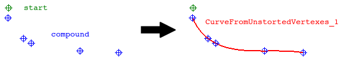

Creates a spline using a set of vertexes in random order, starting from a given vertex.
This function explodes the input compound into vertexes, then looks for the closest vertex from the start vertex, and continue until all vertexes from the compound are matched. The reordered vertexes are then used to create a spline using the geompy.MakeInterpol function.
def MakeCurveFromUnsortedVertexes( compound_and_start = [None], close = False, poly = False, single = True, add = True, infa = False, dim = 1):

| Name | Description | Type | GUI selection [?] | Selection by name [?] | Recursive [?] | Default value |
|---|---|---|---|---|---|---|
| compound_and_start | The compound of vertexes describing the curve and the start vertex. For a closed curve, the start vertex is optional. | List of 1 Compound of Vertexes + 1 Vertex |
yes | yes | - | [None] |
| close | Defines if the curve has to be closed or not. | Boolean | - | - | - | False |
| poly | If True, the output curve is a wire composed of straights edges. If False, the output curve is a single smooth edge. | Boolean | - | - | - | False |
| single | See here. | Boolean | - | - | - | True |
| add | See here. | Boolean | - | - | - | True |
| infa | See here. | Boolean | - | - | - | False |
| dim | See here. | Integer | - | - | - | 1 |
| dim Value [?] | single Value [?] | Type | Number | Name |
|---|---|---|---|---|
| 0 | False | Vertex | n | "CurveFromUnstortedVertexes (Vertex)" |
| 0 | True | Compound or Vertexes | 1 | "CurveFromUnstortedVertexes (Vertexes)" |
| 1 | - | Edge or Wire | 1 | "CurveFromUnstortedVertexes" |
from cfdmsh import * # To adapt to the cfdmsh installation method
vertexes = []
vertexes.append(geompy.MakeVertex(-275, -140, 325))
vertexes.append(geompy.MakeVertex(200, 250, -10))
vertexes.append(geompy.MakeVertex(-80, -60, 100))
vertexes.append(geompy.MakeVertex(400, 510, -70))
vertexes.append(geompy.MakeVertex(-130, -100, 150))
AddToStudy(vertexes, 'vertex')
compound = geompy.MakeCompound(vertexes)
AddToStudy(compound, "compound")
curve_from_unsorted_vertexes = MakeCurveFromUnsortedVertexes([compound, vertexes[0]])
-
tougeron-cfd.com © 2016